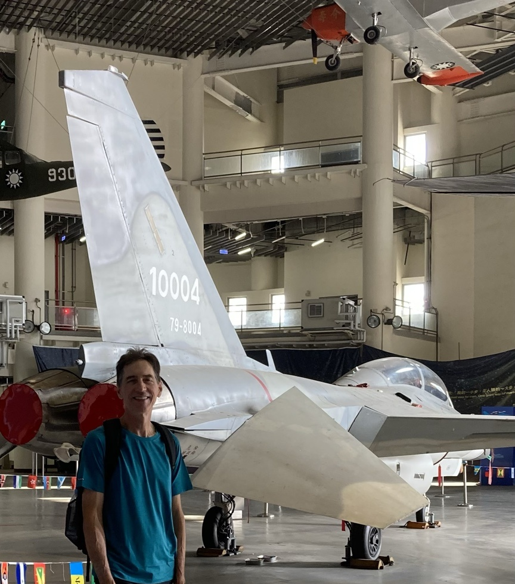
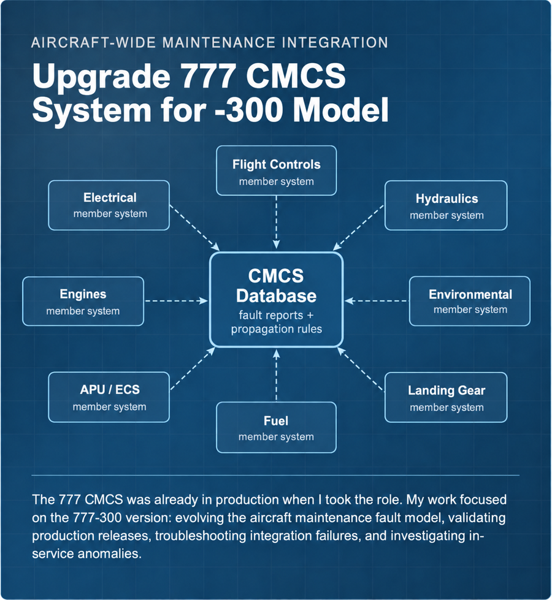

Projects
Each case study uses newly drawn conceptual diagrams and personally confirmed technical descriptions rather than proprietary program artifacts.

F-CK-1 Flight-Control Built-In Test Architecture
Preflight BIT architecture, detailed software requirements, circuit/testability analysis, diagnostic software, fault-coverage improvements, and aircraft integration through first flight.

Boeing 777-300 Central Maintenance Computer System
Aircraft-wide fault-model changes, root-cause isolation, CMCS database revision, SIL validation, production releases, integration troubleshooting, and worldwide fleet-anomaly investigation.

JAS-39 Gripen Flight-Control Failure & BIT Verification
FMET procedure development, pilot-in-the-loop integrated testing under injected fault conditions, and separate Built-In Test verification using injected hardware failures to evaluate fault detection and isolation.